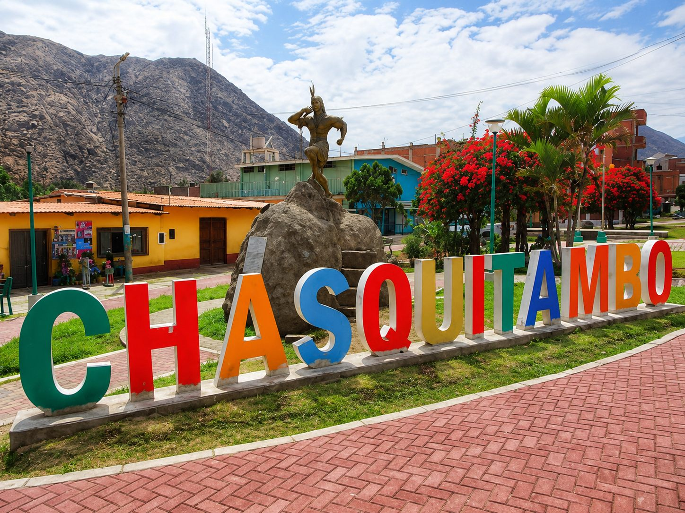

La palta del Fortaleza
La fama del valle. Sandía, mango y plátano también salen de estas chacras: el sol constante da cosecha todo el año, así que no hay temporada mala.
Áncash · Colquioc · Tierra prodigiosa de amor y eterno sol
Chasquitambo es el punto donde la costa se convierte en sierra: valle soleado todo el año, fruta recién cortada y comida de verdad antes de subir a los 4,100 m de Conococha.

La ruta
205 kilómetros que casi todo el turismo terrestre hacia la Cordillera Blanca recorre. Chasquitambo cae justo en el primer cuarto, cuando ya llevas rato en carretera y todavía falta lo empinado.
Después de Chasquitambo la carretera empieza a trepar en serio. Conococha está a 4,100 m: el cuerpo agradece haber comido antes.
Por qué aquí
La fama del valle. Sandía, mango y plátano también salen de estas chacras: el sol constante da cosecha todo el año, así que no hay temporada mala.
El plato de la casa, con preparaciones que van de lo tradicional al broaster que popularizó el Festival del Cuy.
Hospedajes a pie de carretera para quien viaja de noche o prefiere aclimatarse antes de encarar la altura.
Qué ver
Casi todo está a pie de carretera o a pocos minutos del pueblo. Si solo tienes media hora, alcanza.
Directorio
Hospedajes, comida y fruta del pueblo, en un solo lugar. Un toque y llamas directo — sin apps, sin intermediarios.
El calendario
Si puedes elegir la fecha de tu viaje, elige una de estas. El pueblo cambia por completo.
¿Tienes un negocio en el pueblo?
Si tienes hospedaje, restaurante, movilidad o vendes fruta en Chasquitambo, tu ficha aquí es gratuita mientras el proyecto arranca. Solo necesitamos teléfono, horario y un par de fotos.
Quiero mi ficha